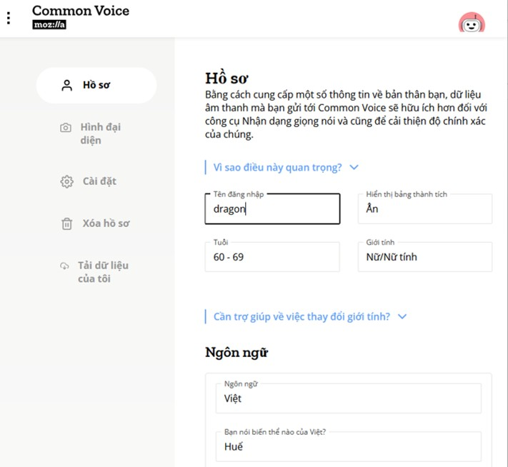
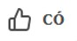
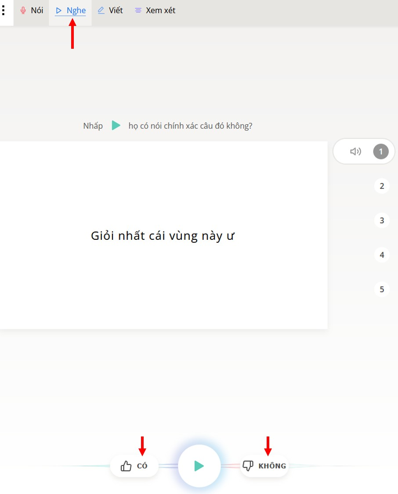
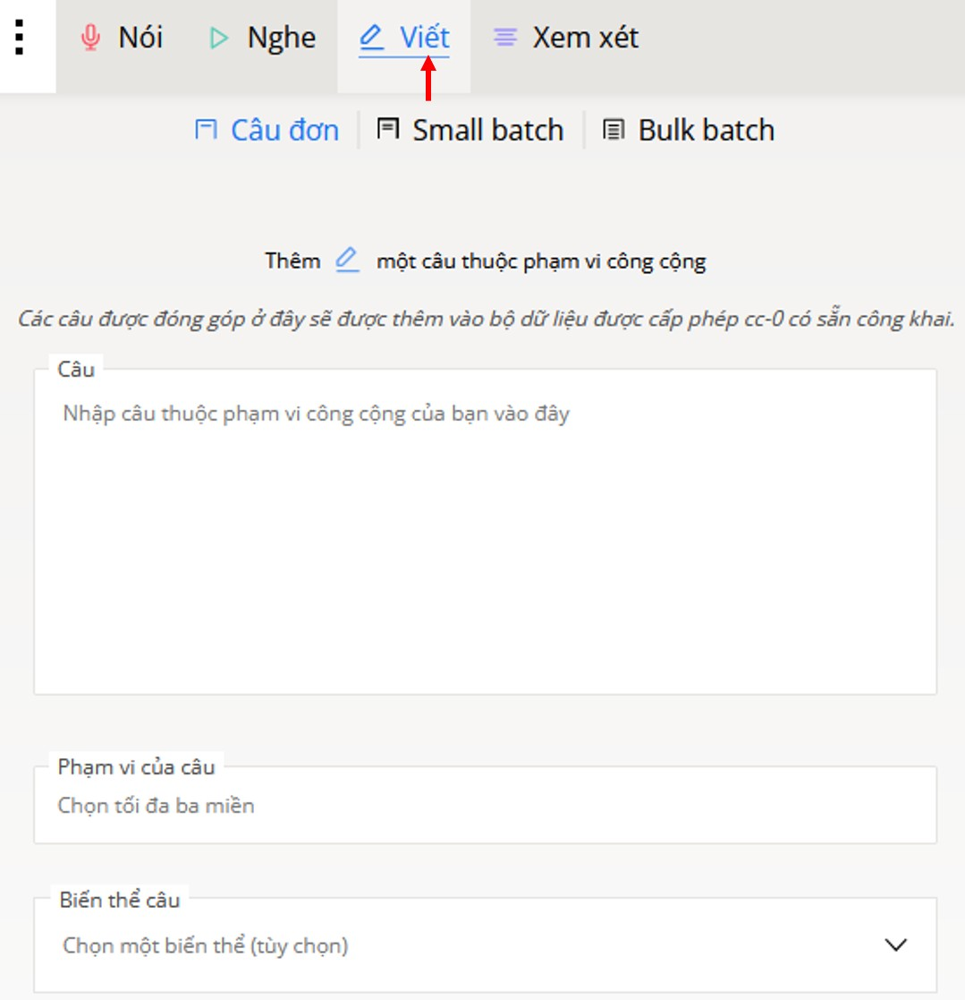
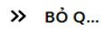
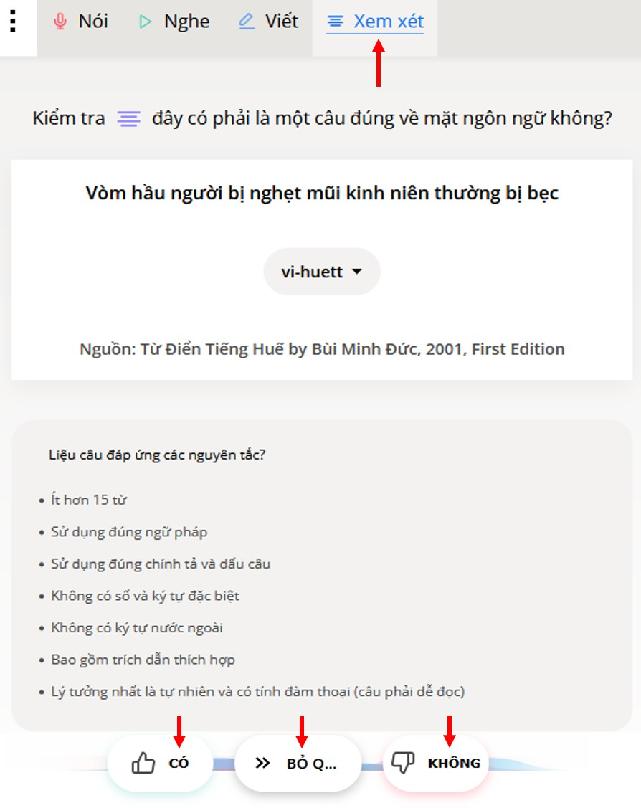

Xây Dựng
Kỹ Thuật Trí Tuệ Nhân Tạo
Cho Tiếng Huế
Lê Viết Chung trình bày
Mục Đích
- Hiện tại những kỹ thuật AI như Google Translate, Apple Translate và OpenAI có thể “Nghe” và “Dịch” tiếng Việt rất chính xác. Nhưng khi cần xử lý tiếng địa phương như tiếng Huế thì những kỹ thuật đó vẫn chưa có đủ dữ kiện.
- Mục đích của chương trình này là để Xây dựng “Tập Dữ Liệu cho Tiếng Huế” (AI Dataset for Tiếng Huế)
Xây dựng “Tập Dữ Liệu cho Tiếng Huế”
- Thu âm giọng nói của càng nhiều người Huế càng tốt: bắt đầu từ 10 người, 100 người, đến 1,000 người, v.v. để thành lập một cộng đồng người Huế cho chương trình “crowdsourced” này.
- Dùng chương trình Common Voice của Mozilla để thu âm và tích lũy những câu nói tiếng Huế điển hình thu thập từ cuốn Từ Điển Tiếng Huế của Bác Sĩ Bùi Minh Đức.
Chương Trình Crowdsourced cho Tiếng Huế
Do người Huế, nam hay nữ, già hay trẻ, trong hay ngoài nước, cùng đóng góp
“Một cây làm chẳng nên non,
Ba cây chụm lại nên hòn núi cao”
Mozilla’s Common Voice
- Common Voice là một dự án do cộng đồng đóng góp nhằm tạo ra những tập dữ liệu ngôn ngữ giọng nói đại qui mô, miễn phí và đa dạng để đào tạo công nghệ giọng nói tự động.
- Tình nguyện viên đóng góp bằng cách tự ghi âm các câu đọc, hoặc nghe lại các bản ghi âm của những người khác.
- Cuối năm 2024, Common Voice đã hỗ trợ 133 ngôn ngữ khác nhau.
Mozilla’s Common Voice
- Bản phát hành bộ dữ liệu tiếng Việt đầu tiên được thực hiện vào giữa năm 2020.
Hiện tại, chưa có bộ dữ liệu nào cho tiếng Huế.
Từ Điển Tiếng Huế
của Bác Sĩ Bùi Minh Đức
Từ Điển Tiếng Huế
của Bác Sĩ Bùi Minh Đức
- Bác Sĩ Bùi Minh Đức sinh ra ở Huế, là người thành đạt trong lãnh vực Y Khoa chuyên ngành Tai Mũi Họng.
- Qua cuốn Từ Điển Tiếng Huế , tác giả muốn ghi lại tiếng nói trung thực của người dân xứ Huế và Thừa Thiên.
Từ Điển Tiếng Huế
của Bác Sĩ Bùi Minh Đức
- Đây là một công trình sưu tập các nét đặc thù của tiếng Huế và Thừa Thiên để chúng khỏi phôi pha với ngày tháng.
Từ Điển Tiếng Huế - Tập 1 do nhà in Tâm An xuất bản vào năm 2001 gồm 531 trang, thu thập hàng ngàn câu văn điển hình tiếng Huế.
Từ Điển Tiếng Huế trên Common Voice
- Với sự đồng ý của BS Bùi Minh Đức, những câu văn điển hình tiếng Huế trong Từ Điển Tiếng Huế đã bắt đầu được đưa lên Common Voice.
- Cộng đồng người Huế trên khắp thế giới có thể tham gia ghi âm giọng Huế của mình.
- Common Voice sẽ thu thập những thu âm tiếng Huế và phát hành Tập Dữ Liệu Tiếng Huế trong tương lai.
Làm Sao Để Tham Gia Chương Trình Này
- Sau đây là những việc mà bạn có thể làm trên Common Voice để giúp cho chương trình này:
- Ghi âm
- Nghe
- Viết
- Xem xét
“Đăng Ký” Trên Common Voice
- Để dùng Common Voice , bạn cần đăng ký.
- Vào trang Common Voicehttps://commonvoice.mozilla.org/vi
- Nhấn vào nút Đăng Nhập/Đăng Ký
- Điền Email của bạn
- Chọn một mật khẩu riêng
- Điền tên và chọn ngôn ngữ ở trang Hồ Sơ
- Chọn tiếng Việt là ngôn ngữ chính, và tiếng Huế là biến thể
Trang “Đăng Ký” Trên Common Voice
Trang “Nói” Trên Common Voice
- Để ghi âm trên Common Voice bạn vào trang Nóihttps://commonvoice.mozilla.org/vi/speak
- Trang này giúp bạn ghi âm giọng nói của bạn.
- Bạn sẽ đọc câu trên trang này sau khi nhấn vào icon microphone
Trang "Nói” Trên Common Voice

Trang “Nghe” Trên Common Voice
- Bạn nghe những câu đã được người khác ghi âm trên trang Nghehttps://commonvoice.mozilla.org/vi/listen
- Nếu họ phát âm chính xác thì bạn chấp thuận bằng cách nhấn vào icon

- Nếu không thì nhấn vào icon

Trang "Nghe” Trên Common Voice
Trang “Viết” Trên Common Voice
- Bạn đề nghị viết câu mới trên trang Viếthttps://commonvoice.mozilla.org/vi/write
Trang "Viết” Trên Common Voice
Trang “Xem Xét” Trên Common Voice
- Trên trang Xem Xéthttps://commonvoice.mozilla.org/vi/review , bạn kiểm chứng xem một câu đã viết có đúng về mặt ngôn ngữ không
- Nếu có thì bấm vào
- Nếu không thì bấm vào
- Nếu không chắc thì bấm vào

Trang “Xem Xét” Trên Common Voice
Xin Vui Lòng Đóng Góp và Quảng Bá Chương Trình Này
Đóng Góp
- Xin chọn một mục tiêu khả thi cho chính bạn. Thí dụ:
- Nói - 10 câu mỗi ngày trong vòng 1 tuần
- Nghe - 10 câu mỗi ngày trong vòng 1 tuần
- Xem xét - 10 câu mỗi ngày trong vòng 1 tuần
Quảng Bá
- Chuyển tập tài liệu này cho gia đình và thân hữu người Huế ở Việt Nam hay ngoại quốc
- Nhờ họ đóng góp cho chương trình (Nói, Nghe, Xem Xét)
- Nhờ họ chuyển thông tin này cho người Huế trên toàn thế giới